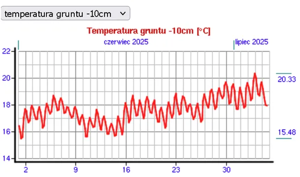

Dlaczego ogórek nie śpiewa?

Temperatura gruntu o świcie przesądza o tym, jaka jest temperatura powietrza za dnia. Nawet przy największym nasłonecznieniu przesądza o tym, jak ciepło może być w południe. Oczywiście mogą za dnia dotrzeć do nas masy powietrza nagrzane wcześniej na południu, jak to miało miejsce kilka dni temu, gdy temperatura przekraczała 36 st. C. Początek lata to okres krótkich nocy, grunt nagrzewa się każdego dnia więcej, bo krótkie noce są za krótkie, by wychłodził się do stanu z poprzedniej doby. W tym czasie sprzyjają temu ciepłe deszcze, które przyspieszają magazynowanie ciepła głębiej w glebie. Mokra gleba znacznie łatwiej przewodzi ciepło w głąb. To, co obserwujemy od kilku miesięcy oraz w poprzednich sezonach to suche wiatry z północy wysuszające pola.

Wykres pokazuje, że od 1 czerwca do 5 lipca gleba (-10 cm) o świcie ledwo dochodzi do 18 st. C, czyli o 2 stopnie mniej, niż to zwykle o tej porze bywa. Skutkiem tego gorących dni jest niewiele i przeplatają te okresy chłodne noce.
Głównym czynnikiem kształtującym ziemski klimat są Słońce i chmury, których jest więcej, gdy jonosfera przepuszcza więcej promieniowania kosmicznego, właśnie wchodzimy w wieloletni okres z większą ilością chmur nad globem. Lokalne czynniki to prądy morskie, nie mamy na to żadnego wpływu. Udział CO2 w efekcie cieplarnianym jest pomijalnie mały w zestawieniu z parą wodną H2O, policzyłem to i opisałem to tutaj : " Czy temperatura na Ziemi drgnie o ułamek stopnia, gdy tradycyjna produkcja przemysłowa i populacja wzrosną o 2000% ?" https://pawelklimczewski.pl/2024/02/23/czy-temperatura-na-ziemi-drgnie-o-ulamek-stopnia-gdy-tradycyjna-produkcja-przemyslowa-i-populacja-wzrosna-o-2000/
Piękna pogoda zaprasza w plener, warto skorzystać, bo już w niedzielę wieczorem od Słowacji i Czech nadejdą obfite opady, tak potrzebne naszym, ciągle drogim ogórkom. W każdym ogórku jest spory udział opłat klimatycznych, bo są one ukryte w każdej transakcji, w cenie paliwa do transportu, w cenie narzędzi do ich uprawy, itd. Może to jest odpowiedź na postawione przez poetę pytanie: Dlaczego ogórek nie śpiewa? Czyżby z obawy przed nowym podatkiem za śpiewanie? Dlaczego ogórek nie śpiewa?
Pytanie to, w tytule,
postawione tak śmiało,
choćby z największym bólem
rozwiązać by należało.
Jeśli ogórek nie śpiewa,
i to o żadnej porze,
to widać z woli nieba
prawdopodobnie nie może.
Lecz jeśli pragnie? Gorąco!
Jak dotąd nikt. Jak skowronek.
Jeśli w słoju nocą
łzy przelewa zielone?
Mijają lata, zimy,
raz słoneczko, raz chmurka;
a my obojętnie przechodzimy
koło niejednego ogórka.
/Konstanty Ildefons Gałczyński, 1946/
Paweł Klimczewski